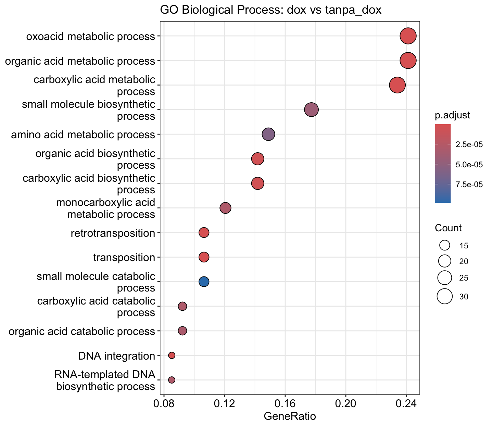

Catatan. Seluruh tutorial ini memakai data publik nyata yang tetap ringan untuk bulk RNA-seq. Kita memakai Bash untuk QC, alignment, dan kuantifikasi, lalu R untuk analisis ekspresi diferensial dan pengayaan fungsi gen. Pada penelitian nyata dengan data berukuran puluhan GB, tahap unduhan serta kuantifikasi menuntut waktu dan sumber daya lebih besar.
Apa itu studi RNA-Seq?
Menyelami percakapan genetik
RNA sequencing (RNA-seq) adalah teknologi sekuensing generasi baru yang memungkinkan kita “mendengar” aktivitas gen dalam sel untuk mengetahui gen mana yang aktif, seberapa besar ekspresinya, dan bagaimana ekspresi itu berubah dalam berbagai kondisi biologis. RNA-seq memetakan seluruh transkriptom (semua RNA yang aktif dalam sel pada waktu tertentu), termasuk RNA langka dan varian splicing baru yang belum pernah teridentifikasi.
Teknologi ini telah merevolusi biologi molekuler dengan menghadirkan gambaran menyeluruh tentang dinamika ekspresi gen, baik pada level jaringan maupun, lebih baru lagi, pada level sel tunggal melalui pendekatan single-cell RNA-seq. Pendekatan ini membuka jendela terhadap keragaman seluler yang sebelumnya tersembunyi, memungkinkan identifikasi tipe sel baru, jalur diferensiasi, dan respons sel spesifik terhadap lingkungan.
Mengapa penting untuk akuakultur?
Dalam konteks akuakultur, RNA-seq menjadi alat yang strategis dan canggih untuk memahami bagaimana respon organisme budidaya terhadap suatu kondisi tertentu, misalnya stres, penyakit, pakan, serta kondisi lingkungan secara molekuler. Sehingga kita dapat mengungkap gen-gen yang terlibat dalam imunitas, pertumbuhan, metabolisme, hingga adaptasi terhadap budidaya intensif.
Penerapannya mencakup identifikasi biomarker untuk deteksi dini penyakit, seleksi genomik berbasis ekspresi gen, optimalisasi pakan, pengembangan strain unggul, hingga penerapan gene editing (CRISPR). Misalnya, dengan menggunakan single-cell RNA-seq, kita bisa mengeksplorasi peran masing-masing sel dalam organ penting seperti hati, usus, insang atau organ lain untuk menghadirkan wawasan yang jauh lebih tajam untuk manajemen kesehatan dan nutrisi.
Dari gen ke keputusan produksi
RNA-seq menjembatani dunia molekuler dan praktik budidaya. Dengan memahami “bahasa” genetik secara mendalam, kita tak hanya menjawab pertanyaan biologis, tetapi juga membuat keputusan produksi yang lebih presisi, efisien, dan berkelanjutan. RNA-seq bukan sekadar teknologi, melainkan fondasi untuk membangun akuakultur yang cerdas, yang tidak lagi menebak, tapi memahami langsung apa yang sebenarnya dibutuhkan oleh organisme budidaya.
Integrasi RNA-Seq dan data serologi untuk prediksi alergi ikan. Dengan menganalisis ekspresi dan konservasi gen alergen, terutama parvalbumin (PV), studi kita bisa mengaitkan data molekuler ikan dengan respons imun seseorang. Hasilnya digunakan untuk merancang strategi diagnosis alergi ikan yang lebih spesifik dan personal untuk meningkatkan akurasi deteksi alergi antarspesies. Sumber gambar:Liu et al. 2024
Tentang data yang digunakan dan persiapannya
Studi kasus: regulasi lipid pada ragi
Dalam tutorial ini, kita tidak akan menggunakan dataset dari studi pada spesies akuakultur, melainkan hanya akan menggunakan dataset RNA-seq dari studi pada Saccharomyces cerevisiae. Studi oleh Degreif et al 2017 menggunakan pendekatan RNA-seq untuk mengetahui set gen yang sensitif terhadap fluiditas membran dan bagaimana gen-gen tersebut diaktifkan secara sebagai bagian dari penyesuaian metabolik dan stres sel. Data sequencing berbasis paired-end diunduh dari NCBI dengan kode akses GEO GSE94345. Dalam tutorial ini, kita akan mencari tahu bagaimana pengaruh penggunaan doxycycline (tanpa_dox) terhadap ekspresi dari domain aktif SPT23p90. Sehingga kita akan membandingkan 2 kelompok yang diberi dan tidak diberi doxycycline dan melihat perbandingan profil ekspresi gen nya.
Kondisi
Sampel GEO
Run SRA
Replikasi
tanpa_dox
GSM2473529–GSM2473531
SRR5220163–SRR5220165
3
dox
GSM2473532–GSM2473534
SRR5220166–SRR5220168
3
Dalam tutorial ini, kita akan memulai dari pasangan data mentah hasil sequencing (FASTQ), berukuran sekitar 1 GB. Sehingga setidaknya, Anda harus memiliki sisa penyimpanan data sebesar 8 - 10 GiB untuk menyimpan file FASTQ, indeks, BAM, dan hasil kuantifikasi gen.
Memilih dan memasang tools
Pipeline ini memakai tiga tools utama yang bekerja berurutan, yaitu HISAT2 untuk menyejajarkan (align) reads ke genom referensi, StringTie untuk mengkuantifikasi ekspresi tiap gen mengikuti anotasi, dan samtools untuk menangani berkas hasil alignment. Tahap analisis diferensial di akhir memakai paket R DESeq2. Pilihan HISAT2 dan StringTie digunakan untuk tutorial ini karena keduanya akurat, hemat memori, dan dapat berjalan pada komputer biasa tanpa HPC.
Semua tools alignment dipasang melalui conda via bioconda.
Dua belas FASTQ sudah tersedia dan bisa diakses pada tutorial QC. Sekarang kita menambahkan beberapa hal yang diperlukan oleh workflow RNA-seq, yaitu metadata untuk menghubungkan setiap FASTQ dengan kondisi eksperimen, genom referensi serta anotasi ragi untuk alignment dan kuantifikasi.
# bashset-euo pipefailROOT="$(pwd)"DD="$ROOT/docs/data/rnaseq-gse94345"mkdir-p"$DD/ref"# unduh genom dan anotasi ragi dari Ensembl release 115curl-fL-o"$DD/ref/Saccharomyces_cerevisiae.fa.gz"\ https://ftp.ensembl.org/pub/release-115/fasta/saccharomyces_cerevisiae/dna/Saccharomyces_cerevisiae.R64-1-1.dna.toplevel.fa.gzcurl-fL-o"$DD/ref/Saccharomyces_cerevisiae.gtf.gz"\ https://ftp.ensembl.org/pub/release-115/gtf/saccharomyces_cerevisiae/Saccharomyces_cerevisiae.R64-1-1.115.gtf.gzgzip-dkf"$DD/ref/Saccharomyces_cerevisiae.fa.gz"\"$DD/ref/Saccharomyces_cerevisiae.gtf.gz"# simpan hubungan FASTQ, kondisi, akses GEO, dan run SRAcat>"$DD/metadata.csv"<<'EOF'sample,condition,geo_accession,sra_runspt23p90_untreated_1,tanpa_dox,GSM2473529,SRR5220163spt23p90_untreated_2,tanpa_dox,GSM2473530,SRR5220164spt23p90_untreated_3,tanpa_dox,GSM2473531,SRR5220165spt23p90_dox_1,dox,GSM2473532,SRR5220166spt23p90_dox_2,dox,GSM2473533,SRR5220167spt23p90_dox_3,dox,GSM2473534,SRR5220168EOF
metadata.csv akan dipakai lagi saat menyusun count matrix dan model DESeq2. Jangan mengubah urutan atau nama sampel di file ini tanpa mengubah nama FASTQ yang sesuai. Referensi berada di ref/, sedangkan FASTQ hasil QC berada di _pipe/trimmed/.
Pipeline dari reads ke matriks hitungan
Tiga langkah berikut mengubah reads hasil QC menjadi gene_count_matrix.csv, yaitu matriks jumlah baca per gen per sampel yang menjadi masukan DESeq2. Jalankan perintah satu per satu agar setiap tahap dapat diperiksa.
Membangun index dan menyejajarkan reads
# bashDD=docs/data/rnaseq-gse94345mkdir-p"$DD/_pipe/bam"READ_DIR="$DD/_pipe/trimmed"# bangun indeks sekali saja dari referensi ragihisat2-build-p 4 "$DD/ref/Saccharomyces_cerevisiae.fa""$DD/_pipe/idx"# alignmentfor s in$(tail-n +2 "$DD/metadata.csv"|cut-d,-f1);dohisat2-p 4 -x"$DD/_pipe/idx"\-1"$READ_DIR/${s}_R1.fastq.gz"-2"$READ_DIR/${s}_R2.fastq.gz"\|samtools sort -@ 4 -o"$DD/_pipe/bam/${s}.bam"samtools index "$DD/_pipe/bam/${s}.bam"done
hisat2-build membangun indeks genom sekali saja. Tidak seperti data sintetis sebelumnya, kita memakai mode spliced alignment bawaan HISAT2 karena ragi adalah eukariota dengan intron.
Hasil alignment untuk FASTQ hasil trimming sangat baik. Overall alignment rate berkisar antara 96 - 97%, yang mengindikasikan bahwa referensi dan orientasi pasangan reads sesuai.
Statistik lebih detail dapat diperiksa kembali untuk setiap .BAM file dengan menggunakan samtools
Alignment memberi tahu kita lokasi setiap read pada genom, tetapi belum memberi tabel jumlah read per gen. Pada tahap ini, StringTie membaca BAM terurut dari tiap sampel bersama anotasi GTF. Ia lalu memperkirakan dukungan read untuk setiap transkrip dan gen yang sudah tercatat pada referensi. Hasilnya masih terpisah, satu GTF untuk satu sampel. Itu wajar, karena tiap library memang diukur sendiri-sendiri lebih dahulu.
Perintah berikut menjalankan kuantifikasi untuk keenam BAM. sample_list.txt dibuat bersamaan agar tahap berikutnya mengetahui nama sampel dan lokasi GTF masing-masing. Satu baris berisi nama_sampel, tab, lalu jalur GTF.
# bashmkdir-p"$DD/_pipe/ballgown":>"$DD/_pipe/sample_list.txt"for s in$(tail-n +2 "$DD/metadata.csv"|cut-d,-f1);domkdir-p"$DD/_pipe/ballgown/${s}"stringtie-e-B-p 4 -G"$DD/ref/Saccharomyces_cerevisiae.gtf"\-o"$DD/_pipe/ballgown/${s}/${s}.gtf""$DD/_pipe/bam/${s}.bam"printf'%s\t%s\n'"$s""$DD/_pipe/ballgown/${s}/${s}.gtf">>"$DD/_pipe/sample_list.txt"done
Parameter pada perintah tersebut memiliki pekerjaan yang berbeda:
Parameter
Fungsi pada tutorial ini
-G
Memberi anotasi GTF ragi sebagai daftar gen dan transkrip yang akan dikuantifikasi.
-e
Membatasi StringTie pada transkrip dalam anotasi; tool tidak merakit transkrip atau isoform baru.
-B
Menulis berkas tambahan berformat Ballgown di folder tiap sampel. Berkas ini berguna bila hasil ingin diperiksa dengan Ballgown.
-p 4
Memakai empat thread.
-o
Menentukan GTF keluaran yang menyimpan hasil kuantifikasi sampel tersebut.
Kombinasi -G dan -e cocok untuk contoh ini karena genom ragi sudah dianotasi dengan baik dan tujuan kita adalah membandingkan ekspresi gen yang diketahui. Untuk spesies dengan anotasi belum lengkap, perakitan transkrip baru bisa menjadi analisis tersendiri dan perlu dinilai lebih hati-hati.
Menyusun matriks hitungan dengan prepDE
Sekarang ada enam GTF, tetapi DESeq2 memerlukan satu matriks, yang mana baris adalah gen, kolom adalah sampel, dan setiap sel berisi count. prepDE.py, yang dipasang bersama StringTie, membaca GTF dari sample_list.txt lalu menerjemahkan informasi coverage StringTie menjadi perkiraan count pada tingkat gen dan transkrip. Tool ini tidak membaca ulang BAM; karena itu, daftar GTF dan nama sampel harus benar sejak langkah sebelumnya.
Perintah berikut menghasilkan dua matriks. Untuk analisis diferensial pada tutorial ini, gunakan matriks gen. Matriks transkrip tetap disimpan karena berguna bila suatu saat ingin memeriksa ekspresi isoform.
-i menerima daftar sampel dan GTF; -g menentukan keluaran count per gen; sedangkan -t menentukan keluaran count per transkrip. Jangan menormalisasi kedua matriks ini dengan CPM, TPM, atau FPKM sebelum memakainya di DESeq2. DESeq2 membutuhkan count integer dan menghitung faktor normalisasinya sendiri untuk mengatasi perbedaan kedalaman sequencing.
Validasi berikut dijalankan dengan R. Jika ada count negatif, non-integer, atau jumlah kolom selain enam, stopifnot() menghentikan proses; bila kode menghasilkan tabel di bawah, matriks lolos pemeriksaan.
Hasil akhir yang kita pakai adalah gene_count_matrix.csv, yaitu matriks jumlah baca per gen kali sampel yang benar-benar berasal dari enam FASTQ publik. Pada eksekusi tutorial ini, matriks berisi 7.127 gen × 6 sampel; semua nilainya integer non-negatif. Nilai nol pada sekitar 11% sel juga wajar: tidak setiap gen terdeteksi pada setiap library.
prepDE.py menulis ID gen sebagai ORF|nama_gen, misalnya YAL067C|SEO1. Bentuk itu dapat langsung digunakan sebagai nama baris pada DESeq2. Saat memakai org.Sc.sgd.db untuk anotasi, ambil bagian ORF sebelum tanda |, karena basis data tersebut mengenali YAL067C, bukan gabungan ID dan nama gen. Matriks ini menjadi masukan tahap analisis diferensial berikutnya.
Analisis perbedaan ekspresi
Kita akan membandingkan ekspresi gen pada kondisi dox terhadap tanpa_dox. Dalam desain GSE94345, doxycycline menekan ekspresi fragmen aktif SPT23p90. Karena tanpa_dox dipakai sebagai referensi, log2FoldChange positif berarti ekspresi lebih tinggi ketika SPT23p90 ditekan, sedangkan nilai negatif berarti ekspresi lebih rendah.
DESeq2 bekerja langsung dengan count integer. Paket ini menghitung faktor normalisasi antar-sampel, memodelkan variasi count dengan distribusi binomial negatif, lalu menguji perbedaan kedua kondisi. Gen dengan total count kurang dari 10 dibuang agar baris yang hampir tidak memiliki informasi tidak ikut diuji.
# Muat count dan metadata, lalu samakan urutan sampelnya.library(DESeq2)counts <-as.matrix(read.csv("data/rnaseq-gse94345/gene_count_matrix.csv",row.names =1, check.names =FALSE))meta <-read.csv("data/rnaseq-gse94345/metadata.csv", row.names =1,check.names =FALSE)stopifnot(identical(sort(colnames(counts)), sort(rownames(meta))))counts <- counts[, rownames(meta), drop =FALSE]stopifnot(all(counts >=0), all(counts ==round(counts)))# Jadikan tanpa_dox sebagai referensi agar arah log2 fold change mudah dibaca.meta$condition <-factor(meta$condition, levels =c("tanpa_dox", "dox"))# Saring gen dengan count sangat rendah, lalu pasang model DESeq2.dds <-DESeqDataSetFromMatrix(countData = counts, colData = meta, design =~ condition)dds <- dds[rowSums(counts(dds)) >=10, ]dds <-DESeq(dds, quiet =TRUE)res <-results(dds, contrast =c("condition", "dox", "tanpa_dox"))# Pilih DEG dengan ambang statistik dan besar perubahan yang sama-sama ketat.deg <-subset(res, !is.na(padj) & padj <0.05&abs(log2FoldChange) >1)write.csv(as.data.frame(res), "data/rnaseq-gse94345/deseq2_dox_vs_tanpa_dox.csv",row.names =TRUE)data.frame(jumlah_DEG =nrow(deg),naik_pada_dox =sum(deg$log2FoldChange >0, na.rm =TRUE),turun_pada_dox =sum(deg$log2FoldChange <0, na.rm =TRUE))
Penyaringan menyisakan 6.179 dari 7.127 gen. DESeq2 menghasilkan padj untuk 5.340 gen setelah independent filtering. Dengan ambang padj < 0.05 dan |log2FoldChange| > 1, terdapat 142 DEG: 40 lebih tinggi dan 102 lebih rendah pada dox. Tabel lengkap ditulis ke docs/data/rnaseq-gse94345/deseq2_dox_vs_tanpa_dox.csv.
log2FoldChange menyatakan besar perubahan pada skala log basis 2. Nilai +1 setara dengan kenaikan dua kali, sedangkan -1 setara dengan penurunan menjadi setengah. pvalue adalah hasil uji per gen; padj sudah memperhitungkan banyaknya gen yang diuji dengan koreksi Benjamini-Hochberg. Karena itu, penentuan DEG memakai padj, bukan pvalue mentah.
Gen dengan bukti statistik paling kuat
Sebagian besar gen dengan padj terkecil bergerak ke arah negatif. AGA1 turun sekitar 6,8 kali pada dox (log2FoldChange = -2,76), FLO1 turun sekitar 12,1 kali (-3,60), dan HPF1 turun sekitar 3,9 kali (-1,95). POR1, HXK1, SAG1, dan ADH4 juga termasuk gen dengan padj terkecil dan semuanya lebih rendah pada dox. Sebaliknya, ADH1 naik hampir empat kali (log2FoldChange = 2,00).
Arah perubahan FLO1 sesuai dengan studi sumber: ketika fragmen aktif SPT23p90 ditekan oleh doxycycline, ekspresi gen flokulasi ini ikut turun. Hasil DESeq2 menunjukkan asosiasi yang kuat pada perbandingan ini, tetapi tidak cukup untuk menyatakan bahwa SPT23p90 mengatur langsung setiap gen dalam daftar tersebut.
Memvisualisasikan hasil dengan volcano plot
Volcano plot mempertemukan besar perubahan pada sumbu-x dengan kekuatan bukti statistik pada sumbu-y. Sumbu-y memakai padj, sama dengan nilai yang dipakai untuk memilih DEG, sehingga garis ambang dan warna titik tidak menyampaikan dua ukuran yang berbeda.
Lihat kode R volcano plot
suppressMessages({library(ggplot2); library(dplyr); library(ggrepel)})# Kelompokkan gen dengan ambang yang sama seperti pada pemilihan DEG.res_df <-as.data.frame(res)res_df$gene <-sub(".*[|]", "", rownames(res_df))res_df <- res_df %>%mutate(status =case_when(!is.na(padj) & padj <0.05& log2FoldChange >1~"Naik pada dox",!is.na(padj) & padj <0.05& log2FoldChange <-1~"Turun pada dox",TRUE~"Tidak signifikan"))# Beri label pada delapan DEG dengan padj terkecil.top <- res_df %>%filter(status !="Tidak signifikan") %>%slice_min(padj, n =8)# Plot besar perubahan terhadap padj agar ambang visual konsisten.ggplot(res_df, aes(log2FoldChange, -log10(padj), colour = status)) +geom_point(alpha =0.75, size =1.8) +scale_colour_manual(values =c("Naik pada dox"="#c0392b","Turun pada dox"="#2c7fb8","Tidak signifikan"="grey78"), name =NULL) +geom_vline(xintercept =c(-1, 1), linetype ="dashed", colour ="grey55") +geom_hline(yintercept =-log10(0.05), linetype ="dashed", colour ="grey55") +geom_text_repel(data = top, aes(label = gene), size =3,max.overlaps =20, show.legend =FALSE, colour ="grey20") +labs(x =expression(log[2]~"fold change (dox vs tanpa_dox)"),y =expression(-log[10]~"(adjusted p-value)")) +theme_minimal(base_size =13) +theme(legend.position ="top")
Gambar 1: Volcano plot GSE94345. Merah menunjukkan gen yang lebih tinggi pada dox, sedangkan biru menunjukkan gen yang lebih rendah. Garis putus-putus menandai |log2FC| > 1 dan padj < 0,05.
Titik di sisi kanan lebih tinggi pada dox; titik di sisi kiri lebih tinggi pada tanpa_dox. Dari delapan DEG berlabel, tujuh berada di sisi kiri: AGA1, FLO1, HPF1, POR1, HXK1, SAG1, dan ADH4. ADH1 berada di sisi kanan. Sebaran ini sejalan dengan ringkasan DEG, yaitu lebih banyak gen yang turun daripada naik pada dox.
MA plot
MA plot menempatkan rata-rata count ternormalisasi pada sumbu mendatar dan log2FoldChange pada sumbu tegak. Plot ini membantu memeriksa apakah sinyal hanya berasal dari gen dengan count rendah atau juga muncul pada gen yang terukur dengan baik.
# Warnai gen dengan padj < 0,05; ambang besar perubahan belum diterapkan di sini.DESeq2::plotMA(res, alpha =0.05, ylim =c(-5, 5), main ="dox vs tanpa_dox")
Gambar 2: MA plot GSE94345 untuk dox versus tanpa_dox. Titik biru memiliki padj < 0,05; garis horizontal menunjukkan tidak ada perubahan ekspresi.
Sebanyak 448 gen memiliki padj < 0.05 dan berwarna biru. Setelah syarat |log2FoldChange| > 1 diterapkan, jumlahnya menjadi 142 DEG. Dari 142 DEG tersebut, 13 memiliki baseMean di atas 1.000 dan hanya satu yang memiliki baseMean di bawah 10. Sinyal tetap terlihat pada gen yang terukur dengan count tinggi.
PCA antar sampel
PCA merangkum pola ekspresi seluruh sampel setelah variansinya distabilkan. Sampel yang berdekatan memiliki profil ekspresi yang lebih mirip.
# Stabilkan variansi sebelum menghitung PCA antar-sampel.vsd <-varianceStabilizingTransformation(dds, blind =FALSE)# Warna menunjukkan kondisi eksperimen.plotPCA(vsd, intgroup ="condition") +scale_color_manual(values =c(tanpa_dox ="#2c7fb8", dox ="#c0392b")) +theme_minimal(base_size =13)
Gambar 3: PCA enam sampel GSE94345 setelah variance-stabilizing transformation. Ketiga replikasi terpisah menurut kondisi pada PC1.
PC1 menjelaskan 76,2% variasi dan memisahkan kedua kondisi tanpa tumpang tindih. PC2 menjelaskan 11,1% variasi. Replikasi pertama dan kedua berdekatan dalam masing-masing kondisi, sedangkan replikasi ketiga bergeser pada PC2 tetapi tetap berada bersama kelompok kondisinya. Pola ini mendukung adanya perbedaan ekspresi global antara dox dan tanpa_dox; PCA sendiri tidak menunjukkan gen mana yang menyebabkan pemisahan tersebut.
Heatmap gen paling diferensial
Heatmap berikut menampilkan 25 gen dengan padj terkecil. Nilai setiap gen dikurangi dengan rerata gen tersebut. Warna karena itu menunjukkan ekspresi relatif antar-sampel, bukan perbedaan absolut antar-gen.
# Ambil 25 gen dengan padj terkecil dan pusatkan nilainya per gen.topg <-head(rownames(res[order(res$padj, na.last =NA), ]), 25)mat <-assay(vsd)[topg, , drop =FALSE]mat <- mat -rowMeans(mat)# Ubah matriks ke format panjang agar dapat digambar dengan ggplot2.long <-as.data.frame(as.table(as.matrix(mat)))colnames(long) <-c("gene", "sample", "z")long$condition <-factor(meta[as.character(long$sample), "condition"], levels =c("tanpa_dox", "dox"))long$gene <-factor(long$gene, levels =rev(topg))ggplot(long, aes(sample, gene, fill = z)) +geom_tile() +facet_grid(~ condition, scales ="free_x", space ="free_x") +scale_fill_gradient2(low ="#2c7fb8", mid ="#f7f7f7", high ="#c0392b",name ="Ekspresi\nterpusat") +labs(x =NULL, y =NULL) +theme_minimal(base_size =10) +theme(axis.text.x =element_blank(), axis.ticks.x =element_blank(),panel.grid =element_blank(), strip.text =element_text(face ="bold"))
Gambar 4: Heatmap 25 gen GSE94345 dengan padj terkecil. Warna menunjukkan ekspresi yang dipusatkan terhadap rerata setiap gen.
Dari 25 gen ini, 20 lebih rendah dan lima lebih tinggi pada dox. Warna ketiga replikasi dalam setiap kondisi umumnya searah, termasuk pada AGA1, FLO1, HPF1, POR1, dan ADH1. Pola itu menunjukkan bahwa perbedaan tidak berasal dari satu sampel saja. Perlu diingat bahwa pemilihan heatmap hanya berdasarkan padj; ENO1, misalnya, masuk ke 25 teratas tetapi tidak melewati ambang |log2FoldChange| > 1 yang dipakai untuk daftar DEG.
Analisis fungsi gen - GO dan KEGG pathway
Daftar DEG belum menjelaskan proses biologis yang berubah. Analisis pengayaan menguji apakah fungsi tertentu muncul lebih sering dalam daftar DEG daripada dalam latar belakang gen yang diuji. Di sini kita memakai dua sumber anotasi:
Gene Ontology Biological Process untuk istilah proses biologis.
KEGG untuk jalur metabolisme yang berisi DEG.
ID keluaran prepDE berbentuk ORF|nama_gen. GO memerlukan Entrez ID dari org.Sc.sgd.db, sedangkan KEGG untuk organisme "sce" menerima ORF. Gen dengan padj yang tersedia dipakai sebagai universe, sehingga latar belakang mengikuti gen yang berpeluang masuk ke daftar DEG pada analisis ini. Blok KEGG mengambil anotasi dari KEGG REST API dan memerlukan koneksi internet saat pertama dijalankan.
# Muat basis data anotasi dan fungsi pengayaan.library(AnnotationDbi)library(org.Sc.sgd.db)library(clusterProfiler)library(enrichplot)# Ambil ORF sebelum tanda | untuk daftar DEG dan latar belakang.orf_bg <-unique(sub("\\|.*", "", rownames(res)[!is.na(res$padj)]))orf_de <-unique(sub("\\|.*", "", rownames(deg)))# Petakan ORF ke Entrez ID untuk analisis GO.gene_bg <-unique(na.omit(mapIds(org.Sc.sgd.db,keys = orf_bg, column ="ENTREZID", keytype ="ORF", multiVals ="first")))gene_de <-unique(na.omit(mapIds(org.Sc.sgd.db,keys = orf_de, column ="ENTREZID", keytype ="ORF", multiVals ="first")))stopifnot(length(gene_bg) >0L)# Uji pengayaan GO Biological Process dengan latar belakang gen yang teruji.ego <-enrichGO(gene = gene_de, universe = gene_bg, OrgDb = org.Sc.sgd.db,keyType ="ENTREZID", ont ="BP", pAdjustMethod ="BH",pvalueCutoff =0.05, qvalueCutoff =0.05)# KEGG sce memakai ORF ragi, bukan Entrez ID.ekegg <-enrichKEGG(gene = orf_de, universe = orf_bg, organism ="sce",pAdjustMethod ="BH", pvalueCutoff =0.05,qvalueCutoff =0.05)
Pada dotplot, sumbu-x menunjukkan proporsi DEG yang masuk ke suatu istilah, ukuran titik menunjukkan jumlah gen, dan warna menunjukkan p.adjust. Bila tidak ada istilah yang lolos koreksi multipel, kode menampilkan pesan alih-alih grafik kosong.
Kode
# Gambar maksimal 15 istilah GO atau tampilkan pesan jika hasil kosong.if (nrow(as.data.frame(ego)) ==0L) {cat("Tidak ada istilah GO Biological Process yang lolos ambang setelah koreksi multipel.")} else {dotplot(ego, showCategory =min(15, nrow(as.data.frame(ego)))) +ggtitle("GO Biological Process: dox vs tanpa_dox")}

Gambar 5: Istilah GO Biological Process yang diperkaya pada DEG dox versus tanpa_dox.
Tabel dibatasi pada sepuluh istilah GO teratas agar hasil tetap terbaca. Semua jalur KEGG yang lolos ambang ditampilkan karena jumlahnya hanya 11.
# Tampilkan sepuluh istilah GO dengan padj terkecil.if (nrow(as.data.frame(ego)) >0L) {head(as.data.frame(ego)[, c("ID", "Description", "GeneRatio", "p.adjust")], 10)}
ID Description GeneRatio
GO:0043436 GO:0043436 oxoacid metabolic process 34/141
GO:0006082 GO:0006082 organic acid metabolic process 34/141
GO:0019752 GO:0019752 carboxylic acid metabolic process 33/141
GO:0032197 GO:0032197 retrotransposition 15/141
GO:0032196 GO:0032196 transposition 15/141
GO:0015074 GO:0015074 DNA integration 12/141
GO:0016053 GO:0016053 organic acid biosynthetic process 20/141
GO:0046394 GO:0046394 carboxylic acid biosynthetic process 20/141
GO:0032787 GO:0032787 monocarboxylic acid metabolic process 17/141
GO:0006278 GO:0006278 RNA-templated DNA biosynthetic process 12/141
p.adjust
GO:0043436 8.741114e-09
GO:0006082 8.741114e-09
GO:0019752 8.741114e-09
GO:0032197 1.319134e-07
GO:0032196 1.559598e-07
GO:0015074 1.849433e-07
GO:0016053 4.937432e-06
GO:0046394 4.937432e-06
GO:0032787 2.986775e-05
GO:0006278 2.986775e-05
# Gambar dan tampilkan KEGG hanya jika ada jalur yang lolos ambang.if (nrow(as.data.frame(ekegg)) ==0L) {cat("Tidak ada pathway KEGG yang lolos ambang setelah koreksi multipel.")} else {dotplot(ekegg, showCategory =min(15, nrow(as.data.frame(ekegg)))) +ggtitle("KEGG pathway: dox vs tanpa_dox")as.data.frame(ekegg)[, c("ID", "Description", "GeneRatio", "p.adjust")]}
Dari 142 DEG, 141 dapat dipetakan ke Entrez ID. Sebanyak 5.256 gen latar belakang memiliki Entrez ID, dan 5.243 di antaranya memiliki anotasi Biological Process yang dipakai dalam pengujian. Analisis menghasilkan 54 istilah dengan p.adjust < 0.05. Tiga istilah teratas adalah oxoacid metabolic process (34 dari 141 DEG), organic acid metabolic process (34 dari 141), dan carboxylic acid metabolic process (33 dari 141). Ketiganya memiliki p.adjust = 8,74 × 10^-9 dan banyak berbagi gen yang sama. Hasil ini lebih tepat dibaca sebagai satu kelompok proses metabolisme asam organik yang saling bertumpang tindih, bukan tiga mekanisme terpisah.
Istilah retrotransposition dan transposition masing-masing memuat 15 DEG, sedangkan DNA integration memuat 12 DEG. Daftar gen pada ketiga istilah ini juga saling tumpang tindih. Hasil pengayaan menunjukkan bahwa gen terkait elemen transposabel banyak muncul dalam daftar DEG, tetapi belum menjelaskan penyebab atau dampaknya.
Pemetaan KEGG lebih terbatas: 56 dari 142 DEG dan 2.178 gen latar belakang masuk ke anotasi yang dipakai KEGG. Sebelas jalur lolos koreksi multipel. Hasil teratas adalah Biosynthesis of secondary metabolites (28 dari 56 DEG; p.adjust = 2,79 × 10^-7) dan Carbon metabolism (13 dari 56; p.adjust = 4,79 × 10^-5). Jalur Fatty acid degradation, Biosynthesis of unsaturated fatty acids, Glycolysis / Gluconeogenesis, dan Pyruvate metabolism juga lolos dengan p.adjust = 0,0108.
Analisis ini menggabungkan gen yang naik dan turun. Karena itu, istilah GO atau jalur KEGG yang diperkaya tidak otomatis berarti proses tersebut aktif atau tertekan. Untuk menentukan arah, analisis dapat diulang secara terpisah pada gen yang naik dan turun, atau dilanjutkan dengan metode berbasis peringkat seperti GSEA.
Apa yang perlu dipertimbangkan sebelum studi RNA-seq
Rancang hal-hal berikut sebelum sekuensing.
Gunakan setidaknya tiga replikasi biologis per kondisi sebagai batas praktis, lalu tambah jumlahnya jika variasi biologis diperkirakan besar atau perubahan yang dicari kecil. Replikasi teknis tidak menggantikan sampel biologis independen.
Sebarkan kondisi pada hari ekstraksi, proses pembuatan library, dan lane sekuensing. Catat setiap batch agar dapat dimasukkan ke model, misalnya ~ batch + condition.
Tentukan kedalaman sekuensing berdasarkan organisme, kompleksitas transkriptom, kualitas anotasi, dan sasaran analisis. Kisaran 20 hingga 30 juta read per sampel sering dipakai sebagai titik awal untuk DE tingkat gen pada organisme yang teranotasi baik, tetapi analisis isoform dan transkrip langka memerlukan pertimbangan lain.
Periksa integritas RNA, pilih poly-A selection atau ribo-depletion sesuai jenis sampel, dan simpan informasi strandedness. Parameter strand yang salah saat kuantifikasi dapat mengurangi atau membalikkan count pada gen yang bertumpang tindih.
Gunakan versi genom dan GTF yang cocok, lalu catat versinya. Pada organisme akuakultur non-model, anotasi yang tidak lengkap akan mengurangi jumlah gen yang dapat diberi nama atau masuk ke GO dan KEGG.
Tetapkan kontras, ambang padj, dan ambang besar perubahan sebelum membaca hasil. DESeq2 atau edgeR harus menerima count mentah dan melakukan normalisasinya sendiri.
Pilih gen prioritas berdasarkan besar perubahan, ketidakpastian, fungsi, dan konsistensi antar-replikasi. RT-qPCR atau eksperimen lanjutan diperlukan bila hasil akan dipakai untuk membuat klaim mekanistik.